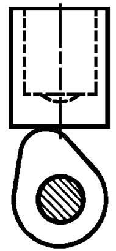
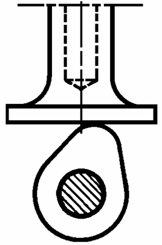
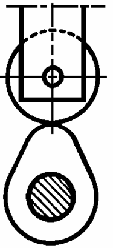
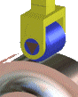
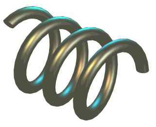

Contact direct :
| Avec l’extrémité de la tige arrondie | Avec l’extrémité de la tige munie d’un plateau |
 |
 |
Contact indirect :
Avec un galet


Continuité du contact
Le maintien du contact entre la tige et la came est fréquemment obtenu par un ressort de rappel.
